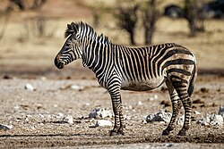
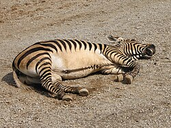

The Mountain Zebra is found in the mountainous regions of eastern Africa.
Scientific Name: Equus zebra
Common Name: Mountain Zebra
Habitat: Mountainous regions of eastern Africa
Diet: Herbivore (primarily grass)
Conservation Status: Vulnerable
The mountain zebra (Equus zebra) is a species of zebra that is native to the mountainous regions of eastern and southern Africa.
It is characterized by its unique coat pattern, which consists of narrow black and white stripes that extend down to the hooves.
The mountain zebra is smaller and more compact than the plains zebra, with a stocky build and a short, erect mane.
There are two subspecies of mountain zebra: the Cape mountain zebra (Equus zebra zebra) and the Hartmann's mountain zebra (Equus zebra hartmannae).
The Cape mountain zebra is found in South Africa, while the Hartmann's mountain zebra is found in Namibia and Angola.
Mountain zebras are herbivores and primarily feed on grasses, but they may also consume leaves and shrubs when grass is scarce.
They are social animals that live in small herds, typically consisting of a dominant male, several females, and their offspring.

The mountain zebra is currently listed as Vulnerable on the IUCN Red List, with an estimated population of fewer than 10,000 individuals in the wild.
The main threats to their survival include habitat loss, competition with livestock for resources, and hunting for their skins and meat.
Conservation efforts are underway to protect their habitats and ensure the survival of this iconic species.
SadGoat :(